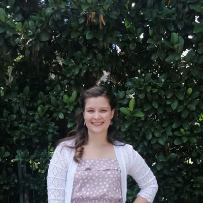

Jandrie Klopper

Summary
A dynamic, self-motivated professional that is always willing to go the extra mile to ensure all tasks provided to me are completed to the best of my ability.
Successfully completed my Bachelor of Science in Information Technology through Eduvos in 2021 and achieved multiple distinctions.
I possess strong technical, organizational, and communication skills.
I am seeking a junior front-end developer position to further develop hands-on skills and professional experience.
Education
- Bachelor of Science in Information Technology - Eduvos (2019 - 2021)
- National Senior Certificate - Hoërskool Oosterland (2013 - 2017)
Work Experience
-
Personal Assistant - Wenbro Hire
August 2023 - present
- Managed telephone communications, meetings, and daily calendar, ensuring seamless scheduling, organization, and follow-up on actionable items.
- Handled emails, correspondence, and liaised with management, showcasing strong communication skills and attention to detail.
- Oversaw office operations, including ordering of office supplies and excelled in administrative duties such as form filling, data capture, and report compilation.
- Provided assistance to the general manager and demonstrated flexibility in adapting to a fast-paced environment by supporting cross functional departments with daily tasks and projects.
-
Technical Product Manager - Insured Nomads
Nov 2022 – May 2023
- Acted as the primary point of contact between development teams and stakeholders, facilitating a transparent flow of information and managing expectations.
- Collaborated with cross-functional teams including engineering, design, and marketing to define and prioritize product features, ensuring alignment with business objectives and customer needs.
- Demonstrated strong communication skills by addressing management inquiries promptly and providing actionable recommendations.
- Conducted user acceptance testing (UAT) and coordinated beta testing efforts to validate product functionality and gather user feedback for refinement.
-
Web Designer - Insured Nomads
Nov 2021 – Nov 2022
- Created, managed and updated the Insured Nomads website, which was built on the WordPress CMS platform, implementing content changes and design enhancements as needed to meet business requirements.
- Collaborated on the creation of marketing materials, including banners and graphics, to enhance brand identity and online presence.
- Contributed to a positive and collaborative team environment, sharing insights and ideas during brainstorming sessions and design reviews.
- Optimized website loading times through image compression, code minification, and other techniques, resulting in a 20% improvement in site speed.
Skills
- HTML
- CSS
- JavaScript
- Git & GitHub
- Canva
- JIRA
- Notion
- Monday.com
- Slack
- WordPress
Awards & Achievements
- Eduvos:
- Achieved an overall average of 89%
- Graduated with distinctions in all 8 Third Year modules (2021)
- Achieved distinctions in 8 Second Year modules (2020)
- Achieved distinctions in 6 First Year modules (2019)
- Hoërskool Oosterland (2017)
- Matriculated with distinctions in English FAL, Life Orientation, and Computer Applications Technology.